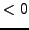

Next: csiglimit <double> ()
Up: Keywords Reference
Previous: comp <int> ()
Contents
correlograms <int> <int> <int> () ()
specifications for correlogram files c#iteration#.dat, p.![[*]](file:/usr/share/latex2html/icons/crossref.png)
parameters:
- correlogram order (maximum index lag), default: half of the number of time series data points,
- number of files to generate ( for all correlogram files, default: no correlogram computation),
- step width (number of iterations) for output.
Piet Reegen
2009-09-23